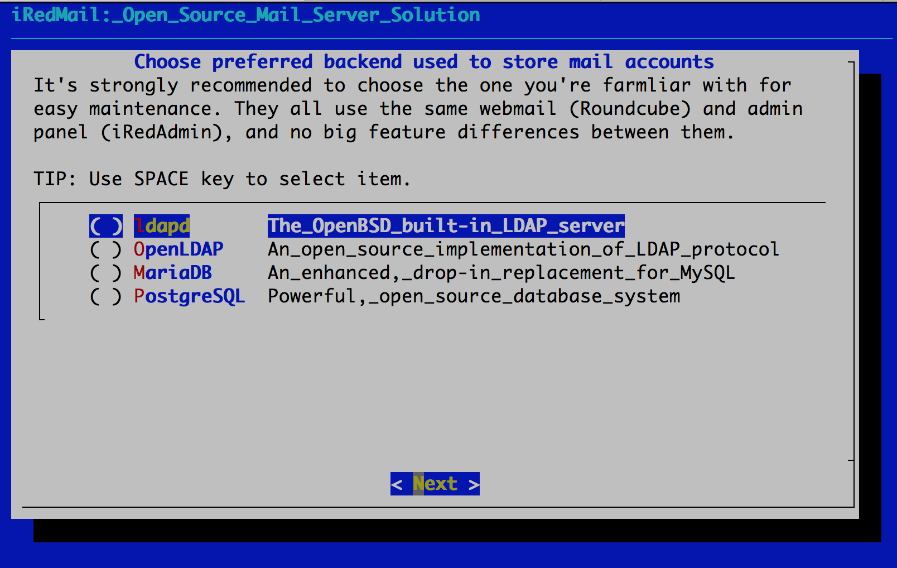

Attention
Check out the lightweight on-premises email archiving software developed by iRedMail team: Spider Email Archiver.
Attention
It's recommended to use the new iRedMail Easy deployment and support platform to deploy and keep your mail server up to date, technical support is available through the ticket system.
Read more: iRedMail Easy - Meet our new deployment and support platform
Warning
Port 25 is required by mail server but many ISPs block it by default.
Port 25 is used for communication between mail servers, it must be open, otherwise your mail server won't be able to receive and send emails. Please contact your ISP to make sure it's not blocked, or ask them to unblock it.
To install iRedMail on OpenBSD, you need:
4 GB memory is required for a low traffic production mail server
with spam/virus scanning enabled.Required OpenBSD installation file sets are (replace [XX] by the real
OpenBSD release number):
Make sure 3 UID/GID are not used by other user/group: 2000, 2001, 2002.
Note
pkg_add -i.No matter your server is a testing machine or production server, it's strongly recommended to set a fully qualified domain name (FQDN) hostname.
Enter command hostname to view the current hostname:
$ hostname
mx.example.com
On OpenBSD, hostname is set in two files: /etc/myname and /etc/hosts.
/etc/myname: FQDN.mx.example.com
/etc/hosts: static table lookup for hostnames. Warning: Please list the
FQDN hostname as first item.# Part of file: /etc/hosts
127.0.0.1 mx.example.com mx localhost localhost.localdomain
Verify the FQDN hostname. If it wasn't changed after updating above two files, please reboot server to make it work.
$ hostname
mx.example.com
iRedMail will install all required binary packages with command pkg_add -i
from mirror site defined in file /etc/installurl (FYI:
installurl(5)), If no mirror defined,
iRedMail will use the fastly CDN
for package installation.
It's recommended to install packages from a mirror site, to reduce server load on OpenBSD primary servers. Also, installing package from a nearest mirror site will speed up package installation. You can find mirror list near you on OpenBSD web site: Getting OpenBSD.
iRedMail is wrote in Bash shell scripting language, so bash shell interpreter is required, install it first:
pkg_add bash dialog
Visit Download page to get the latest stable release of iRedMail.
Upload iRedMail to your mail server via ftp or scp or whatever method you
can use, login to the server to install iRedMail. We assume you uploaded
it to /root/iRedMail-x.y.z.tar.gz (replace x.y.z by the real version number).
Uncompress iRedMail tarball:
# cd /root/
# tar zxf iRedMail-x.y.z.tar.gz
It's now ready to start iRedMail installer, it will ask you several simple questions, that's all required to setup a full-featured mail server.
# cd /root/iRedMail-x.y.z/
# bash iRedMail.sh

/var/vmail/.
Note
There's no big difference between available backends, so it's strongly recommended to choose the one you're familiar with for easier management and maintenance after installation.


To MySQL/MariaDB/PostgreSQL users
If you choose to store mail accounts in MySQL/MariaDB/PostgreSQL, iRedMail
installer will generate a random, strong password for you. You can find it
in file iRedMail.tips.

Note: This account is an admin account and a mail user. That means you can login to webmail and admin panel (iRedAdmin) with this account, login username is full email address.

Choose optional components
Attention
Which webmail should you choose? Roundcube or SOGo?

After answered above questions, iRedMail installer will ask you to review and
confirm to start installation. It will install and configure required packages
automatically. Type y or Y and press Enter to start.

Warning
The weakest part of a mail server is user's weak password. Spammers don't want to hack your server, they just want to send spam from your server. Please ALWAYS ALWAYS ALWAYS force users to use a strong password.
Read file /root/iRedMail-x.y.z/iRedMail.tips first, it contains:
After installation successfully completed, you can access web-based programs
if you choose to install them. Replace your_server below by your real server
hostname or IP address.